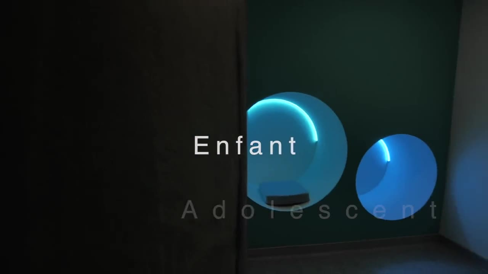

Trade show photographer near Lyon, France: capturing corporate events
Exhibiting at Eurexpo or the Lyon Convention Centre requires meticulous planning and substantial investment. As a trade show photographer near Lyon, France, I focus on transforming your event into an engaging visual narrative. From sleek booth design to spontaneous business conversations and keynote presentations, I document every crucial moment to strengthen your brand presence.

Elevate your corporate image with professional event coverage
During a busy trade show, your on-site team is fully dedicated to welcoming clients and closing deals. Smartphone snapshots cannot reflect the quality of your booth layout or the energy of your booth staff.
Hiring a dedicated trade show photographer near Lyon, France ensures you receive polished, high-resolution imagery ready for immediate press releases, corporate reports, and social media campaigns.

Highlighting booth design and genuine interactions
Before the exhibition doors open to attendees, I photograph your stand in its pristine state, highlighting your branding elements, product displays, and architectural design.
As the exhibition floor fills up, my focus shifts to candid human interactions. Working discreetly without disrupting meetings, I capture genuine handshakes, product demonstrations, and the active atmosphere surrounding your team.

Keynotes, panel discussions, and stage presentations
Conferences and stage talks feature challenging lighting conditions, combining bright LED screens with low ambient light. Specialized camera equipment and technical experience are essential to produce sharp, impactful portraits of your speakers.
I cover your workshops and main stage appearances, catching the focus of the audience and the charisma of your executive team on stage.

Short highlight videos for immediate digital reach
In addition to photography, video content provides an unmatched tool for post-event communication. A fast-paced one-minute highlight video captures the highlights of your exhibition day.
Edited with clean transitions and aligned with your corporate identity, an event recap video allows you to extend the lifespan of your event and thank attendees online.

Seamless workflow tailored to international teams

Organizing an exhibition trip to France demands clear coordination. Prior to the event, we establish a precise shot list including executive portraits, mandatory group shots, and key stand details.
For urgent digital marketing needs, quick-turnaround photo deliveries can be arranged during the event so your press team can publish news live.
Frequently asked questions
Which exhibition venues do you cover near Lyon, France?
I regularly work at major regional venues including Eurexpo Lyon, the Lyon Convention Centre (Cité Internationale), Palais de la Bourse, and corporate locations throughout the Auvergne-Rhône-Alpes area.
Can you deliver photos on the same day for live social media updates?
Yes, I offer fast-turnaround selections delivered during or immediately after the event for your live digital marketing needs.
Do you offer both photo and video packages for trade shows?
Yes, I provide combined coverage options to deliver both high-resolution image galleries and short recap video teasers for your exhibition.
How far in advance should we book trade show coverage?
Given the busy spring and autumn corporate calendars in France, booking several weeks to months ahead is highly recommended.
Planning an exhibition or congress near Lyon, France? Get in touch to discuss your photo and video requirements.
Let’s talk about your project